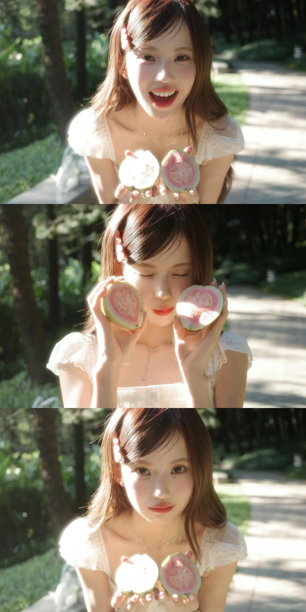
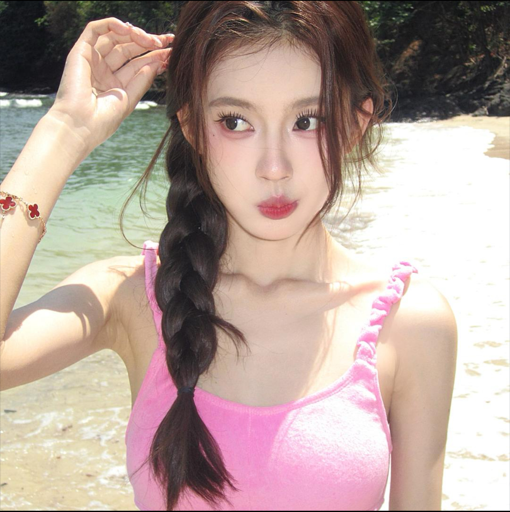

01 / IP POSITIONING✶
Profile
是亮亮
把变美的方法，
变成持续关注她的理由。
是亮亮是我曾参与运营的美妆 IP。本案例从定位、内容、账号矩阵与数据表现，复盘她如何形成清晰的内容辨识度。
- 内容核心
- 美妆方法与造型审美
- 主要受众
- 18—30 岁女性
- 运营平台
- 抖音 · 小红书
- 项目类型
- 个人 IP 内容运营
账号信息与受众数据沿用项目资料快照。
CREATOR OPERATIONS CASE STUDY

美妆 · 穿搭 · 日常
椰奶参与的 IP 项目
IP OPERATIONS CASE / 2026.10.12

把变美的方法，
变成持续关注她的理由。
是亮亮是我曾参与运营的美妆 IP。本案例从定位、内容、账号矩阵与数据表现，复盘她如何形成清晰的内容辨识度。
账号信息与受众数据沿用项目资料快照。
“方法建立价值，
审美连接内容。”
美妆回应具体需求，建立内容价值
穿搭展示整体造型，延伸审美识别
日常补充生活表达，增加人物记忆
这是本次复盘的内容判断；跨号导流效果未有数据支持。
抖音与小红书，围绕同一个人承载不同内容需求。
本次案例复盘关注：内容如何形成辨识度，以及触达、互动和粉丝增长是否同步。

本页呈现项目背景与本次复盘思路。账号规模、历史增长和商业数据为项目资料，不作为椰奶个人业绩。
199.4万粉丝
方法与效果展示：教程、发型、好物及 vlog
查看账号 ↗125.1万粉丝
产品与使用场景：美妆、好物种草
查看主页截图 ↗11.9万粉丝
整体造型展示：服饰、搭配与穿着效果
查看账号 ↗8,879粉丝
生活表达：补充主号之外的人物形象
查看账号 ↗粉丝量为飞书报告资料快照，非实时数据。小号关联依据用户补充；各平台粉丝可能重合，不加总为独立受众。
抖音主号历史增长背景 · 点击查看阶段进展
这一阶段增加 70 万粉丝；按截图计时，在第 531 天达到百万节点。
时间轴为账号历史，不能归为我的个人增长成绩。参与阶段及对应成果需结合实际在岗时间核对。
 Beauty / 美妆用户提供作品图片
Beauty / 美妆用户提供作品图片标题用“求天才发明”的设想制造好奇；作品图呈现明确妆面。复盘重点：话题吸引力与效果展示能否接住彼此。
 Style / 穿搭
Style / 穿搭从截图看，俯拍视角同时呈现人物状态与整体搭配。复盘重点：把拍摄角度变成可识别、可持续的内容形式。
眼镜党、新手、特定妆效，把泛化的“变美”转成具体观看理由。
教程强调方法，造型展示强调效果；按内容目的选择长度。
复盘标题、构图和展示重点，提炼可继续验证的内容形式。
把同一个人的不同穿搭，放在一起看。
悬停看细节 · 点击人物放大 ↗
涂芷靓 · 用户提供穿搭截图 / 透明背景人物展示
年龄以 18—23、24—30 岁为主
统计区间：2026.09.04—10.09
更适合用来观察日常表现
均播 51.3 万，但中位数为 22.6 万。我的复盘判断：日常内容要看中位数，爆款要单独拆解选题与呈现。
我的复盘关注点：触达之后为何没有净增粉？需继续检查关注理由、主页承接与用户留存，不能仅凭此图确定原因。
15条视频覆盖2026年9月4日至10月9日；商业视频指标使用近30天、只看指派且排除营销流量的另一口径。不能混作同一样本，也不能套用于两个小号。
这些数据呈现项目的商业背景。平台报价并非成交价，直播销售额并非个人收入，也不代表我的商务业绩。
把人群、场景、需求和效果写清楚，再决定内容形式，让每条内容都有明确的观看理由。
美妆提供方法，穿搭展示审美，日常补充人物。评估各号价值时分别看数据，不简单相加粉丝。
拆解峰值，也观察日常中位数和净增粉。把数据问题转成下一轮要验证的选题、表达或承接调整。
作品看得见，判断有依据。